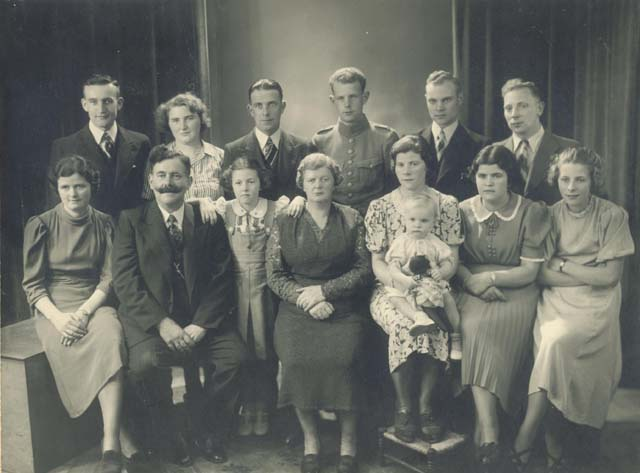

Hier zie je een foto van mijn oma en opa van Coesant.
Van links onder naar rechts onder: Miep van Coesant, mijn opa Kasper van Coesant, Riekie van Coesant, mijn oma Lamberta Felser, Bep van Coesant
Het kindje op schoot is Ria Schlärmann, Annie van Coesant, Rietje van Coesant,
Van links boven naar rechts boven: Ruud de Fouw gehuwd met Miep, de toenmalige vriendin van mijn vader Molly?, Mijn vader Kasper van Coesant,
Freek van Coesant, Fred Schlärmann gehuwd met Bep, Arie van Loon gehuwd met Annie. Deze foto is 13-10-1939 genomen.
Ze waren hier 30 jaar getrouwd